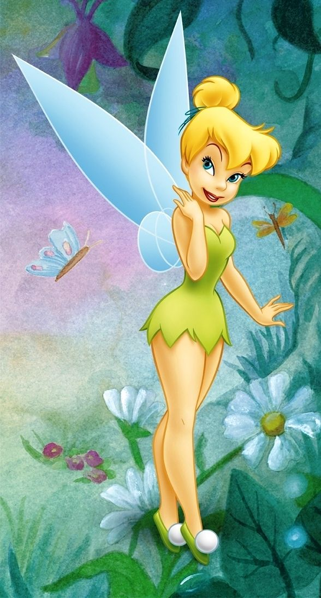

Galeri Ajaib (Mode: Cover/Potong)
Gunakan kelas .fairy-frame. Gambar Anda akan otomatis mengisi bingkai emas di bawah.

Peri Bunga Mawar

Peri Air Terjun

Peri air terjun
Bagaimana Cara Kerjanya?
CSS di atas menggunakan `object-fit: cover;` pada setiap tag `` di dalam `.fairy-frame`. Kode ini memberitahu browser untuk:
- Mengisi seluruh bingkai (rasio 3:4).
- Menjaga rasio aspek asli gambar.
- Memotong (crop) bagian gambar yang berlebih secara otomatis.
Hasilnya, semua gambar Anda akan terlihat rapi dan seragam di dalam bingkai emas tanpa perlu Anda edit manual!